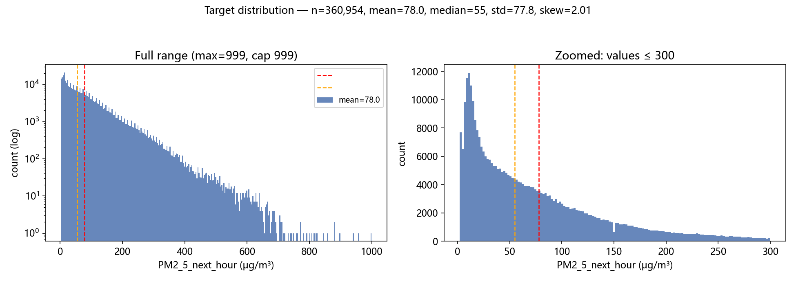
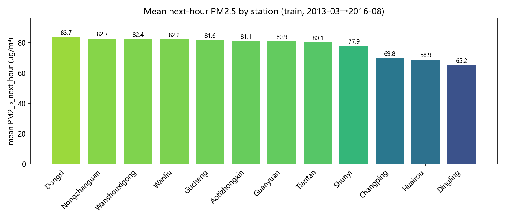
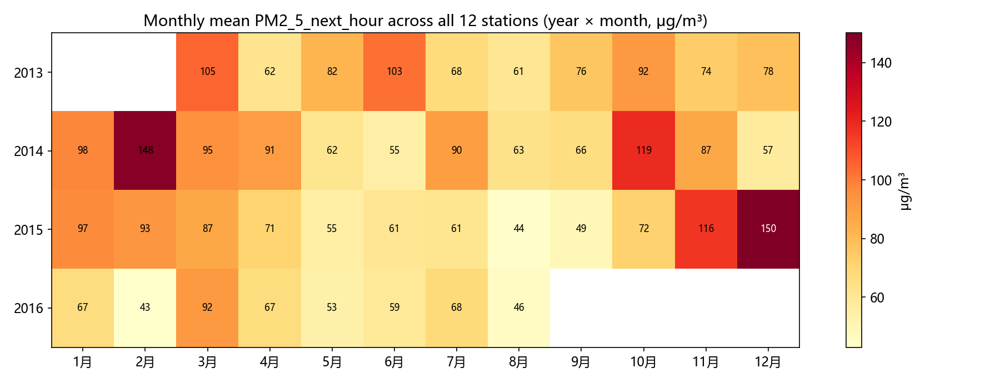

数据:
train.csv(全量 360,954 行) · 生成时间: 2026-09-05 · 脚本:scripts/eda_compute.py→reports/eda_numbers.json→scripts/render_eda_report.py铁律: 本报告所有数字均由 Python 实际运行产出(见文末【溯源与复现】),未手工转写。
PM2_5_next_hour 缺失 = 0 行;数据中无 current_PM2_5 列(禁止用 PM2.5 历史做特征,泄漏红线)
| 统计量 | 值 | 统计量 | 值 |
|---|---|---|---|
| count | 360,954 | skew | 2.01 |
| mean | 78.0 | median | 55 |
| std | 77.8 | min / max | 2 / 999 (封顶) |
| 分位数 | p1=3 / p5=6 / p25=21 / p50=55 / p75=108 / p90=179 / p95=235 / p99=354 | 999 封顶行数 | 1 行 (0.0003%) |
| >600 行数 | 197 行 (0.055%) |
解读: mean(78.0) >> median(55),skew=2.01,强右偏长尾;max=999 为传感器封顶(全数据仅 1 行恰在 999,>600 共 197 行)。75% 分位才 108,但 99% 分位 354——RMSE 评分下这些尖峰事件权重极大,模型对高值事件的预测能力直接决定分数。

| 站点 | 均值 | 中位数 | std | 样本数 | 站点 | 均值 | 中位数 | std | 样本数 | |
|---|---|---|---|---|---|---|---|---|---|---|
| Dongsi | 83.7 | 60 | 82.6 | 30,079 | Guanyuan | 80.9 | 59 | 77.6 | 30,199 | |
| Nongzhanguan | 82.7 | 58 | 82.9 | 30,175 | Tiantan | 80.1 | 58 | 77.5 | 30,102 | |
| Wanshouxigong | 82.4 | 59 | 81.6 | 30,091 | Shunyi | 77.9 | 54 | 78.4 | 29,940 | |
| Wanliu | 82.2 | 59 | 79.5 | 30,393 | Changping | 69.8 | 46 | 70.1 | 29,992 | |
| Gucheng | 81.6 | 59 | 78.5 | 30,166 | Huairou | 68.9 | 47 | 69.6 | 29,830 | |
| Aotizhongxin | 81.1 | 58 | 79.2 | 29,846 | Dingling | 65.2 | 41 | 71.4 | 30,141 |
解读: 城区站最高 Dongsi 83.7,郊区背景站最低 Dingling 65.2,极差 ≈ 18.5 μg/m³(约 28%)。各站 std 均在 70–83,分布形状相似(右偏),主要差别在均值水平 → station 是有效的分类特征,但不足以单独解释方差。

月内均值(全期、12 站合并,按自然月):
| 月 | 1 | 2 | 3 | 4 | 5 | 6 | 7 | 8 | 9 | 10 | 11 | 12 |
|---|---|---|---|---|---|---|---|---|---|---|---|---|
| 均值 | 87.1 | 93.5 | 94.7 | 72.7 | 63.0 | 69.1 | 71.8 | 53.4 | 63.9 | 94.3 | 92.0 | 96.0 |
解读: 仅靠 month-of-year 类日历特征做预测,会被年际差异(如 2015-12=150 vs 2016-02=43)击穿——见 §6 基线 B2。模型应主要依赖实时污染物/气象特征承载事件信号,日历特征只做季节先验。
| 特征 | r | 特征 | r | |
|---|---|---|---|---|
| PM10 | +0.848 | CO | +0.762 | |
| NO2 | +0.643 | SO2 | +0.499 | |
| WSPM | -0.280 | O3 | -0.133 | |
| DEWP | +0.124 | TEMP | -0.122 | |
| RAIN | -0.028 | PRES | +0.022 |
解读: 现时污染物是下一小时 PM2.5 的最强代理——PM10 r=+0.848、CO +0.762、NO2 +0.642(同源燃烧排放,且小时级自相关强);WSPM 负相关(风扩散),O3/TEMP 弱负相关(光化学活跃期往往清洁),DEWP 弱正。这解释了 §6 中线性回归不含任何 PM2.5 历史仍能拿到低 RMSE。
| 列 | 缺失率 % | 列 | 缺失率 % | |
|---|---|---|---|---|
| CO | 4.386 | O3 | 2.355 | |
| NO2 | 2.084 | SO2 | 1.292 | |
| PM10 | 0.532 | wd | 0.220 | |
| DEWP | 0.050 | PRES | 0.049 | |
| TEMP | 0.049 | WSPM | 0.048 | |
| RAIN | 0.048 |
其余列(id/时间/station/年月日/hour/目标)缺失率为 0。解读: 缺失集中在 4 个污染物列(CO 4.4% / O3 2.4% / NO2 2.1% / SO2 1.3%),PM10 0.5%,气象列几乎无缺失 → 插补策略对 CO/O3 的稳健性比气象更重要;目标列无缺失。
method='mle'(最大化变换后正态似然)→ λ = 0.1668;method='pearsonr'(最大化变换值与正态分位数相关)→ λ = 0.1905| 站点 | λ | 站点 | λ |
|---|---|---|---|
| Aotizhongxin | 0.1573 | Changping | |
| Dingling | 0.0974 | Dongsi | |
| Guanyuan | 0.1652 | Gucheng | |
| Huairou | 0.1493 | Nongzhanguan | |
| Shunyi | 0.1655 | Tiantan | |
| Wanliu | 0.1886 | Wanshouxigong |
与队友参考图(R fable Guerrero λ≈0.0895)的方法差异(如实说明):
- 队友图来自 R fable/forecast 的 Guerrero(1993)估计器:以方差稳定为目标,在季节窗口上最小化分段标准差(去季节化子序列)的变异系数,与 fable::box_cox 默认行为一致。
- 本报告 scipy 的两个估计器目标不同: mle 假设变换后近似正态、最大化 profile 似然;pearsonr 最大化变换值与正态分位数(QQ)相关。三者在同一数量级(Guerrero 0.09 vs scipy mle 0.167 / pearsonr 0.191),结论一致:强烈压缩右偏,接近但不完全等于对数(λ=0)。
- 工程建议: λ∈[0.09, 0.19] 区间内,log1p(λ=0) 与 Box-Cox(λ=0.17) 的预测差异在 RMSE 尺度上通常很小;比赛按原始尺度评分,反变换(Duan 或直接 exp 后加残差调整)环节的取舍比 λ 的精确值更重要。可做 raw vs log vs boxcox 三组实验维度(对应 train_rf.py 的 --transform 开关)。
切分规则(禁随机 K 折,防时序泄漏):
| 集合 | 时间范围 | 行数 |
|---|---|---|
| 训练 | 2013-03-01 → 2015-08-31 | 257,927 |
| 验证 | 2015-09-01 → 2016-02-29 (供暖季,与 test 同季节) | 51,349 |
验证集目标: mean=83.2, std=102.0 μg/m³。预测验证集均值时 RMSE 的理论下限 ≈ std ≈ 102.0,可用作基线合理性标尺。
| 基线 | 预测方式(仅用训练时段拟合) | 验证 RMSE (μg/m³,原始尺度) |
|---|---|---|
| B1 常数 | 全训练时段目标均值 79.8 | 102.04 |
| B2 站点×月份 | 训练时段的 (station, month-of-year) 目标均值 | 107.77 |
| B3 线性回归 | OLS: PM10,SO2,NO2,CO,O3,TEMP,PRES,DEWP,RAIN,WSPM + 站点 one-hot(12) + hour 整数;缺失用训练时段中位数插补;无任何滞后特征 | 36.09 |
验证旁证: 全训练集目标均值 = 78.043979,与 sample_submission 占位常数 78.043979 一致(主办方常数基线)。
解读: 1. B1 RMSE 102.04 ≈ 验证集 std 102.0,符合"预测均值≈std"的理论预期。 2. B2 比 B1 还差(107.77 vs 102.04): 训练期(2013-03→2015-08)的 9–2 月历史均值(如 2014-02=148、2015-02=93)无法预见验证期反常干净的冬天(2015-12=150 是 12 月历史均值 2 倍,2016-02 却只有 43)→ 纯日历均值在年际漂移面前没有增益甚至有害,佐证 §3。 3. B3 用现时污染物即达 RMSE 36.09(比常数基线降 64.6%): 无 PM2.5 历史、纯线性即可做到,说明污染物(PM10 r=0.85)是主导信号 → 后续模型(P1 RF 等)必须在特征里吃满污染物+交互,日历特征只是补充。
scripts/eda_compute.py 在 2026-09-05 对 /home/gaogao/workspace/beijing_aq/train.csv 全量实际运行,结果落盘 reports/eda_numbers.json;本报告由 scripts/render_eda_report.py 直接读取该 JSON 生成(无手工转写)。python3 scripts/eda_compute.py && python3 scripts/render_eda_report.pyreports/): fig1_target_distribution.png(目标分布,双面板 log/zoom)、fig2_station_means.png(12 站均值柱状)、fig3_monthly_heatmap.png(年×月均值热力图)。Data:
train.csv(full 360,954 rows) · Generated: 2026-09-05 · Pipeline:scripts/eda_compute.py→reports/eda_numbers.json→scripts/render_eda_report.pyGolden rule: every figure in this report was produced by actual Python runs (see the Appendix: Traceability & Reproduction); none were transcribed by hand.
PM2_5_next_hour missing = 0 rows; the data contains no current_PM2_5 column (using PM2.5 history as features is forbidden — leakage red line)| Statistic | Value | Statistic | Value |
|---|---|---|---|
| count | 360,954 | skew | 2.01 |
| mean | 78.0 | median | 55 |
| std | 77.8 | min / max | 2 / 999 (capped) |
| Quantiles | p1=3 / p5=6 / p25=21 / p50=55 / p75=108 / p90=179 / p95=235 / p99=354 | Rows at 999 cap | 1 row (0.0003%) |
| Rows >600 | 197 rows (0.055%) |
Interpretation: mean (78.0) >> median (55), skew = 2.01 — strongly right-skewed with a long tail; max = 999 is the sensor ceiling (only 1 row in the entire dataset sits exactly at 999; 197 rows exceed 600). The 75th percentile is only 108, yet the 99th percentile is 354 — under an RMSE-based scoring metric these spike events carry enormous weight, and a model's ability to predict high-value events directly determines the score.
| Station | Mean | Median | std | Count | Station | Mean | Median | std | Count | |
|---|---|---|---|---|---|---|---|---|---|---|
| Dongsi | 83.7 | 60 | 82.6 | 30,079 | Guanyuan | 80.9 | 59 | 77.6 | 30,199 | |
| Nongzhanguan | 82.7 | 58 | 82.9 | 30,175 | Tiantan | 80.1 | 58 | 77.5 | 30,102 | |
| Wanshouxigong | 82.4 | 59 | 81.6 | 30,091 | Shunyi | 77.9 | 54 | 78.4 | 29,940 | |
| Wanliu | 82.2 | 59 | 79.5 | 30,393 | Changping | 69.8 | 46 | 70.1 | 29,992 | |
| Gucheng | 81.6 | 59 | 78.5 | 30,166 | Huairou | 68.9 | 47 | 69.6 | 29,830 | |
| Aotizhongxin | 81.1 | 58 | 79.2 | 29,846 | Dingling | 65.2 | 41 | 71.4 | 30,141 |
Interpretation: highest among urban stations is Dongsi at 83.7; lowest among suburban background stations is Dingling at 65.2 — a spread of ≈ 18.5 μg/m³ (≈ 28%). All stations have std in the 70–83 range with similar (right-skewed) distribution shapes; the main difference lies in mean level → station is a valid categorical feature, but insufficient on its own to explain the variance.
Monthly means (full period, 12 stations pooled, by calendar month):
| Month | 1 | 2 | 3 | 4 | 5 | 6 | 7 | 8 | 9 | 10 | 11 | 12 |
|---|---|---|---|---|---|---|---|---|---|---|---|---|
| Mean | 87.1 | 93.5 | 94.7 | 72.7 | 63.0 | 69.1 | 71.8 | 53.4 | 63.9 | 94.3 | 92.0 | 96.0 |
Interpretation: calendar features of the month-of-year type alone will be broken by inter-annual differences (e.g., 2015-12 = 150 vs 2016-02 = 43) — see baseline B2 in §6. The model should rely primarily on real-time pollutant/meteorological features to carry event signals; calendar features serve only as a seasonal prior.
| Feature | r | Feature | r | |
|---|---|---|---|---|
| PM10 | +0.848 | CO | +0.762 | |
| NO2 | +0.643 | SO2 | +0.499 | |
| WSPM | -0.280 | O3 | -0.133 | |
| DEWP | +0.124 | TEMP | -0.122 | |
| RAIN | -0.028 | PRES | +0.022 |
Interpretation: current pollutants are the strongest proxies for next-hour PM2.5 — PM10 r = +0.848, CO +0.762, NO2 +0.642 (same-source combustion emissions, plus strong hour-level autocorrelation); WSPM is negatively correlated (wind dispersion), O3/TEMP weakly negative (photochemically active periods tend to be clean), DEWP weakly positive. This explains why the linear regression in §6 achieves a low RMSE without any PM2.5 history.
| Column | Missing % | Column | Missing % | |
|---|---|---|---|---|
| CO | 4.386 | O3 | 2.355 | |
| NO2 | 2.084 | SO2 | 1.292 | |
| PM10 | 0.532 | wd | 0.220 | |
| DEWP | 0.050 | PRES | 0.049 | |
| TEMP | 0.049 | WSPM | 0.048 | |
| RAIN | 0.048 |
The remaining columns (id/time/station/year-month-day/hour/target) have a missing rate of 0. Interpretation: missingness is concentrated in the 4 pollutant columns (CO 4.4% / O3 2.4% / NO2 2.1% / SO2 1.3%), PM10 0.5%, while the meteorological columns are almost complete → imputation robustness matters more for CO/O3 than for meteorology; the target has no missing values.
method='mle' (maximizes the transformed normality likelihood) → λ = 0.1668; method='pearsonr' (maximizes the correlation between transformed values and normal quantiles) → λ = 0.1905| Station | λ | Station | λ |
|---|---|---|---|
| Aotizhongxin | 0.1573 | Changping | |
| Dingling | 0.0974 | Dongsi | |
| Guanyuan | 0.1652 | Gucheng | |
| Huairou | 0.1493 | Nongzhanguan | |
| Shunyi | 0.1655 | Tiantan | |
| Wanliu | 0.1886 | Wanshouxigong |
Methodological differences vs. teammate's reference figure (R fable Guerrero λ≈0.0895), reported honestly:
- The teammate's figure comes from R fable/forecast's Guerrero (1993) estimator: it targets variance stabilization, minimizing over seasonal windows the coefficient of variation of piecewise standard deviations (of deseasonalized subsequences), consistent with fable::box_cox default behavior.
- The two scipy estimators in this report have different objectives: mle assumes the transformed data is approximately normal and maximizes the profile likelihood; pearsonr maximizes the correlation between transformed values and normal (QQ) quantiles. The three are of the same order of magnitude (Guerrero 0.09 vs scipy mle 0.167 / pearsonr 0.191) and agree on the conclusion: strong compression of the right skew, close to but not exactly the log transform (λ = 0).
- Engineering recommendation: within the λ∈[0.09, 0.19] interval, the difference between log1p (λ=0) and Box-Cox (λ=0.17) predictions is usually small on the RMSE scale; since the competition scores on the original scale, the choice of inverse transform (Duan smearing, or exp followed by residual adjustment) matters more than the exact value of λ. Run raw vs log vs boxcox as three experimental dimensions (corresponding to the --transform switch in train_rf.py).
Split rule (no random K-fold — prevents temporal leakage):
| Set | Time range | Rows |
|---|---|---|
| Train | 2013-03-01 → 2015-08-31 | 257,927 |
| Validation | 2015-09-01 → 2016-02-29 (heating season, same season as test) | 51,349 |
Validation set target: mean = 83.2, std = 102.0 μg/m³. When predicting the validation mean, the theoretical RMSE floor ≈ std ≈ 102.0, which serves as a yardstick for baseline sanity.
| Baseline | Prediction method (fit on train period only) | Validation RMSE (μg/m³, original scale) |
|---|---|---|
| B1 constant | Mean of target over full train period 79.8 | 102.04 |
| B2 station × month | (station, month-of-year) target means over train period | 107.77 |
| B3 linear regression | OLS: PM10,SO2,NO2,CO,O3,TEMP,PRES,DEWP,RAIN,WSPM + station one-hot (12) + hour as integer; missing values imputed with train-period medians; no lag features whatsoever | 36.09 |
Validation-side cross-check: full-train target mean = 78.043979, identical to the placeholder constant 78.043979 in sample_submission (the organizer's constant baseline).
Interpretation: 1. B1 RMSE 102.04 ≈ validation std 102.0, consistent with the theoretical expectation that "predicting the mean ≈ std". 2. B2 is worse than B1 (107.77 vs 102.04): the historical means for months 9–2 (Sep–Feb) of the training period (2013-03 → 2015-08), e.g., 2014-02 = 148 and 2015-02 = 93, cannot anticipate the anomalously clean winter of the validation period (2015-12 = 150 — 2× the month-12 historical mean — while 2016-02 is only 43) → pure calendar means provide no gain and even harm under inter-annual drift, corroborating §3. 3. B3 reaches RMSE 36.09 with current pollutants alone (64.6% lower than the constant baseline): achievable with a purely linear model and no PM2.5 history, showing pollutants (PM10 r = 0.85) are the dominant signal → downstream models (P1 RF, etc.) must saturate the features with pollutants + interactions; calendar features are only supplementary.
scripts/eda_compute.py actually run on 2026-09-05 against the full /home/gaogao/workspace/beijing_aq/train.csv, with results written to reports/eda_numbers.json; this report was generated by scripts/render_eda_report.py reading that JSON directly (no manual transcription).python3 scripts/eda_compute.py && python3 scripts/render_eda_report.pyreports/): fig1_target_distribution.png (target distribution, dual-panel log/zoom), fig2_station_means.png (bar chart of 12-station means), fig3_monthly_heatmap.png (year × month mean heatmap).